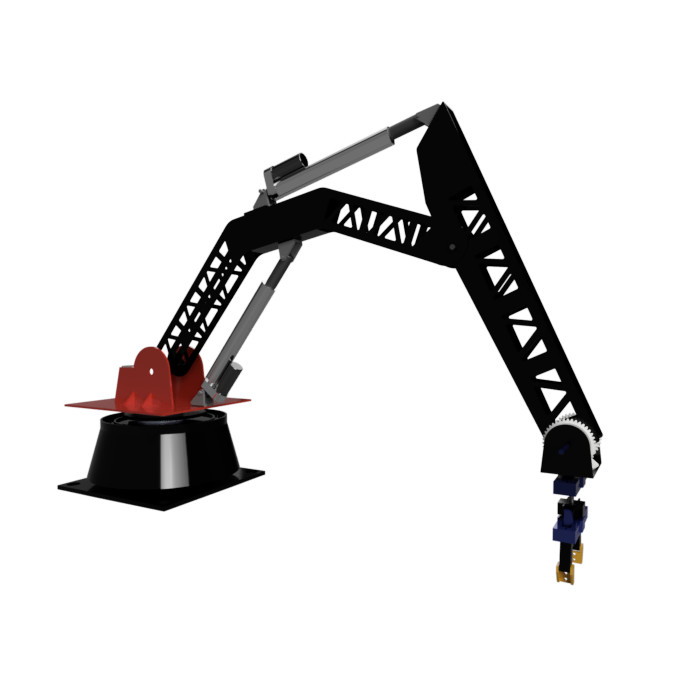
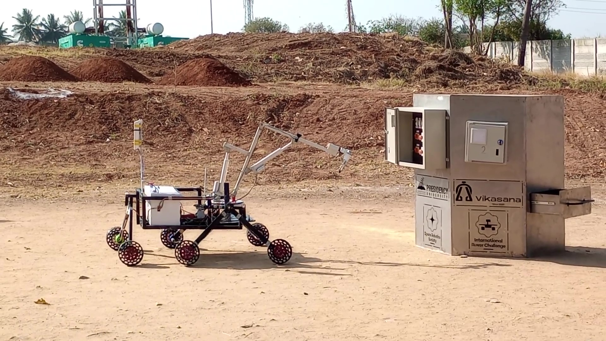
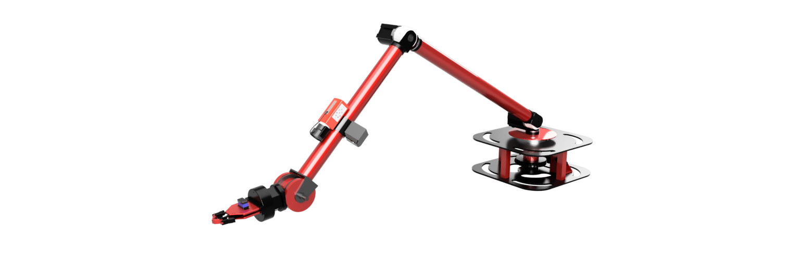

Yuvaan IITG Mars Rover
Robotics Club, IIT Guwahati. Jul. 2021 - Apr. 2024.
Roles: Robotic Manipulator Lead (Jun. 2022 - Apr. 2023), leading a 10-member team. Team Lead (Apr. 2023 - Apr. 2024), leading a 40+ member team across mechanical, software, bio-assembly and navigation.
Results: IRDC rank improved from 11th (2022) to 7th (2023) worldwide. Top 20 onsite finalist at the International Rover Challenge in 2022 and 2023. Best Project Award (Jury and Overall) at Techevince 8.0, 2022.
Yuvaan is the Mars rover built by IIT Guwahati's Robotics Club for international student rover competitions. The work covered the rover's robotic arm, its onboard control, and its autonomous navigation, and it included building IITG's first robotic arm for a student rover competition.
Tech stack: ROS, Gazebo, Jetson Nano, Arduino, PID control, OpenCV, YOLOv8, RRT, ANSYS, CAD
How the system works
Mechanical design
- A 5-DOF, linear actuator-based robotic manipulator with a bevel-gear differential end-effector was designed, modeled and manufactured to fit the competition's workspace constraints.
- Static and dynamic analysis was carried out, including structural analysis in ANSYS. The result was a 30% reduction in weight and a larger workspace for the arm.
- Arm concepts were also designed for several of the competition's design challenges.
Rover and manipulator control
- A Jetson Nano acts as the ROS hub for the rover, with a dedicated Arduino per subsystem running encoder feedback-based PID control.
- The same architecture drives the robotic arm and the 6-wheeled differential-drive traversal.
Autonomous navigation
- A simulation environment was created in ROS and Gazebo with the required sensor plugins.
- A YOLOv8-based arrow detector and an RRT-based path planner handle the autonomous navigation task.
Photos



Video
Arrow detection using YOLOv8